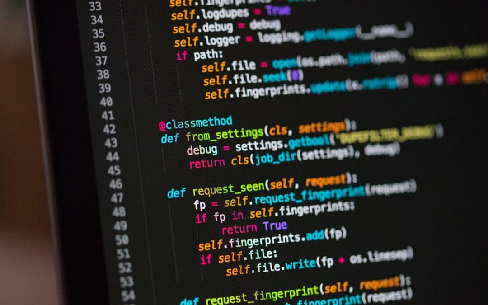
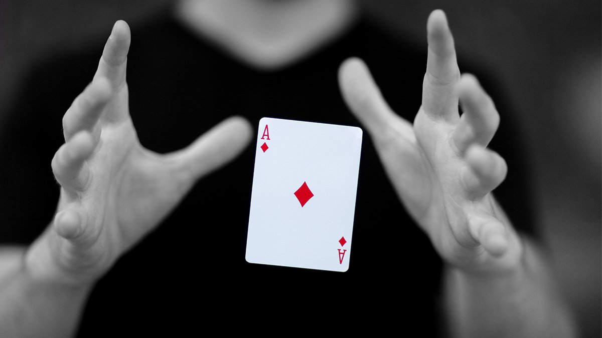
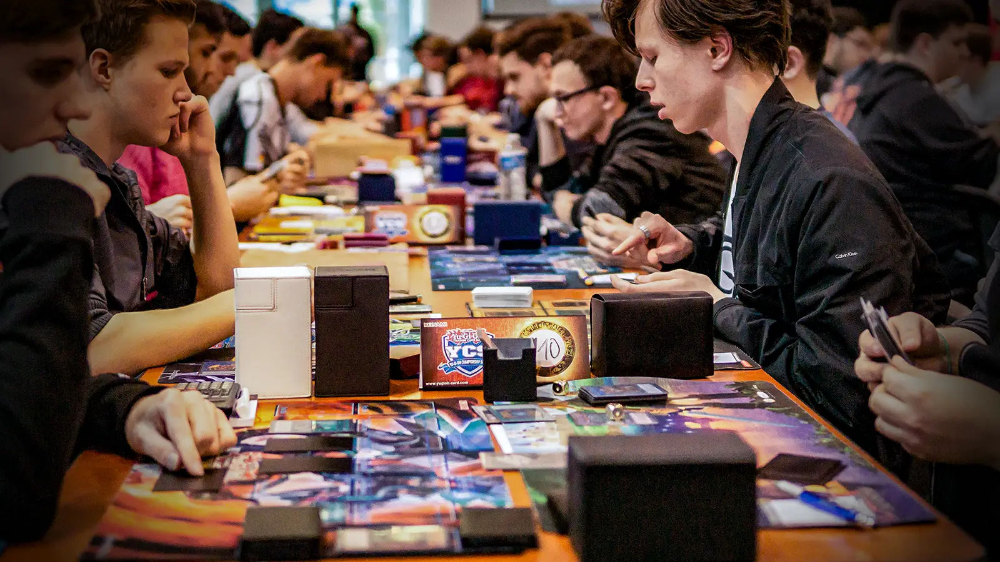

Descrizione
Sono Simone, uno studente dell'istituto Marconi Pieralisi indirizzo informatica. Sono appassionato di tecnologia e informatica, ho esperienza in vari linguaggi di programmazione e amo creare soluzioni software. Sono nato nel 2005 in Polonia.
Interessi
-

Programmazione
Amo creare software e risolvere problemi complessi con codice.
-
Musica
Mi piace ascoltare musica di vari generi.
-
Film e serie TV
Sono appassionato di cinema e serie TV, specialmente di fantascienza.
-

Magia
Mi diverto a eseguire trucchi di magia e stupire gli amici.
-

Giochi di carte
Adoro giocare a carte, soprattutto a Yu-Gi-Oh